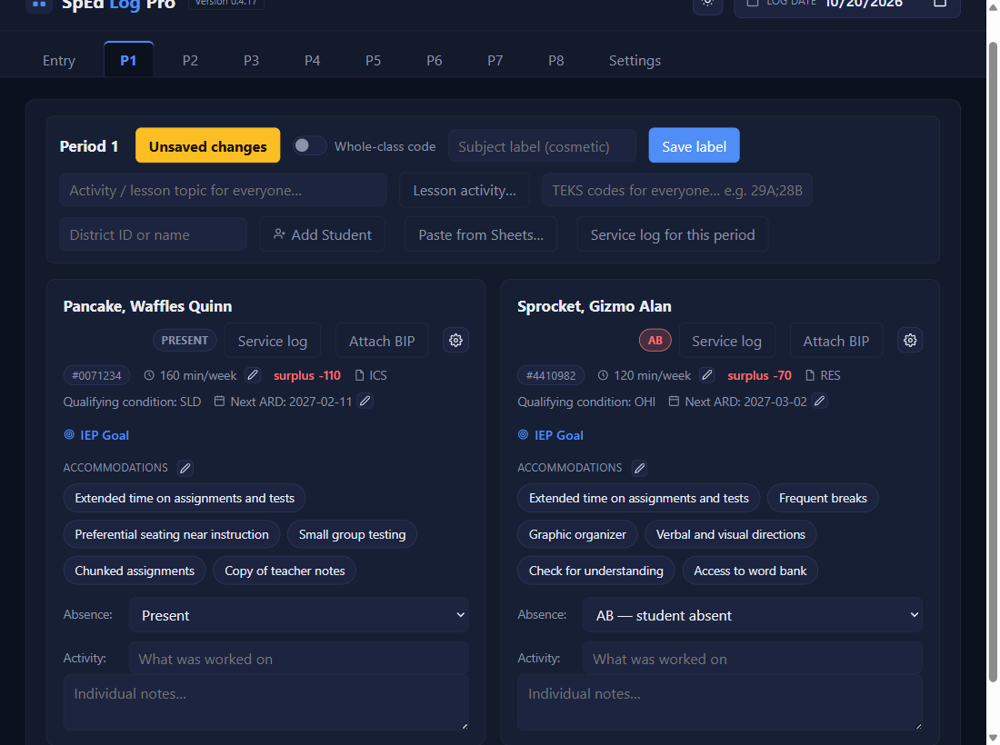
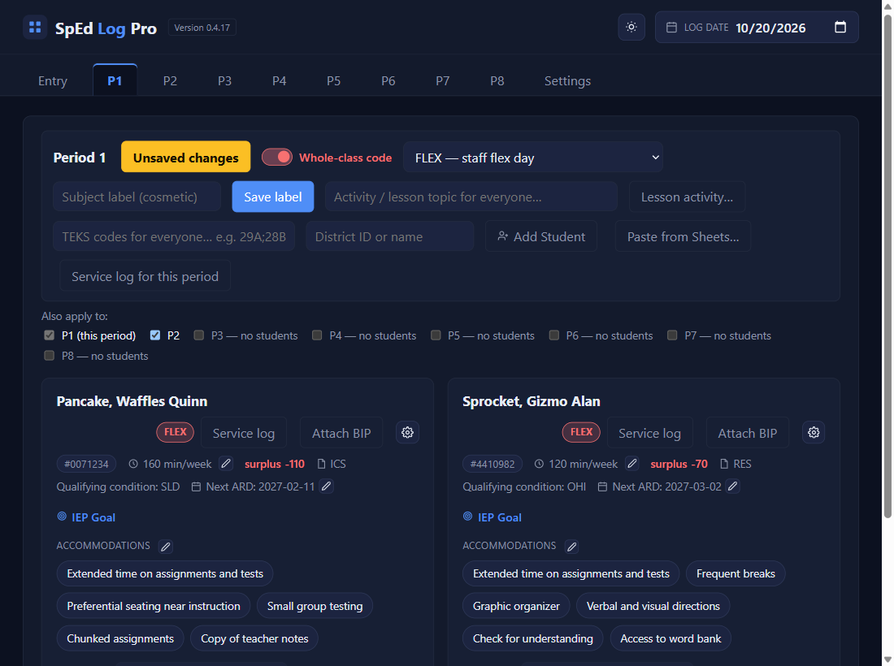
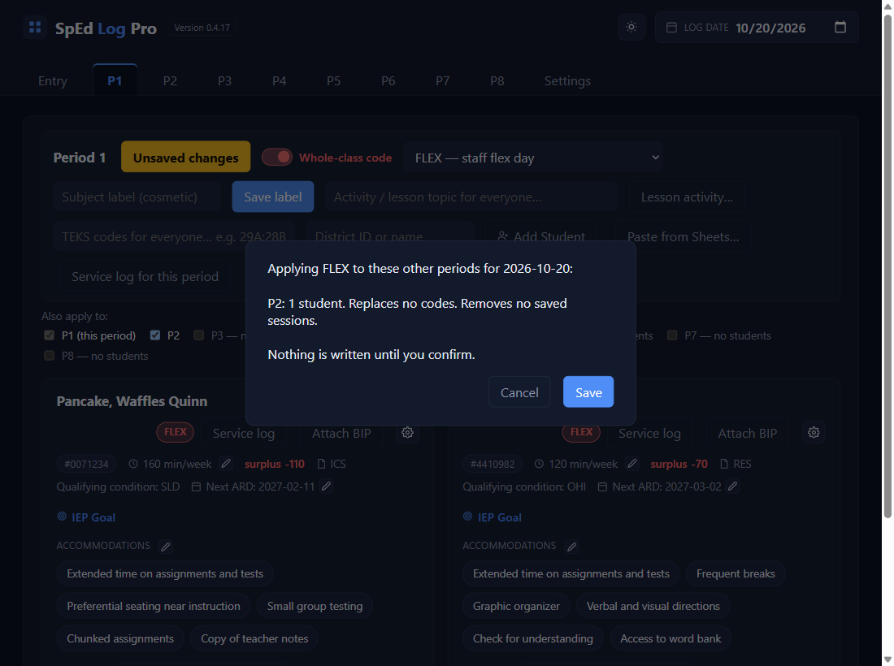
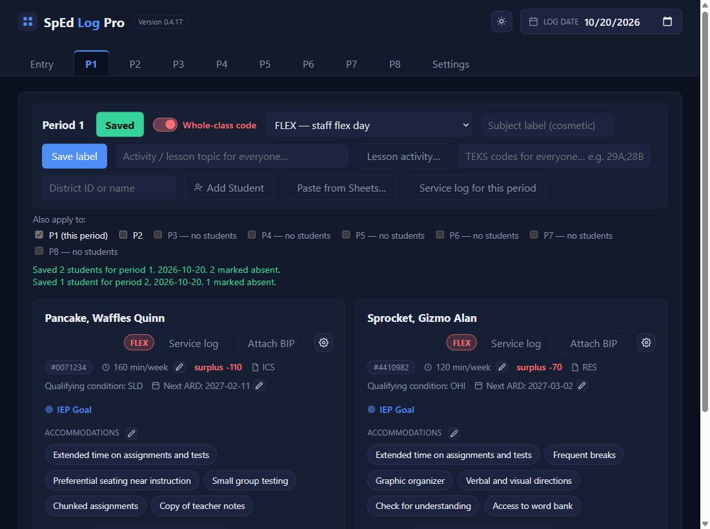

Absences & whole-class codes
One student out: pick the reason in Absence
AB student absent · O field trip, assembly, or school function · S state assessment. The card's badge changes from PRESENT to the code. Their accommodations and activity aren't needed.

Whole class out: switch on Whole-class code and pick one
Use this when nobody in the class got service for the same reason. Every card takes the code, replacing any AB or O already picked.
| Code | Means | Lowers the minutes owed? |
|---|---|---|
SAB | Staff absent | No: the week may read short |
SUB | Staff pulled to sub | Yes |
ARD | Staff at an ARD meeting | Yes |
FLEX | Staff flex day | No: the week may read short |
S | State assessment | Yes |

Same code in other periods? Tick them
Under Also apply to:, tick each other period that had the same day (a flex day usually covers several). A period with nobody in it says no students and can't be ticked. Ticks are never remembered for the next day.
Click Save, check the summary, and Save again
Because those periods aren't on screen, the app first says exactly what it will do in each one. Nothing is written until you confirm.

Read the line it gives you
One line per period it saved, naming the code.

✓ You'll know it worked
- The card badges show the code.
- A line per period, like
Saved 1 student for period 2, 2026-10-20, all coded FLEX. - Those days drop off the Entry tab's Unresolved dates.
✕ Avoid these
- SAB and FLEX for anything else. They keep the minutes owed, so use them only when it was really you out.
- Expecting it to undo itself. To take a whole-class code off, open that period on that date, switch it off, fill in the day, and Save.
⚠ If you see this
Coding these students will remove their already-logged sessions …That day was already saved as present. Remove sessions and save replaces it with the code; Cancel leaves it.
Choose a whole-class code before saving other periods.Other periods are ticked but no code is picked. Pick one, then Save.